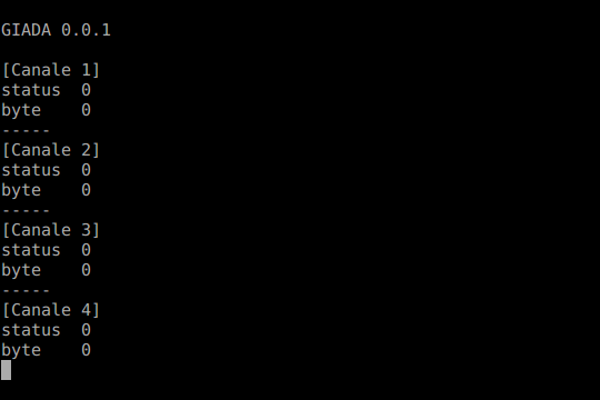
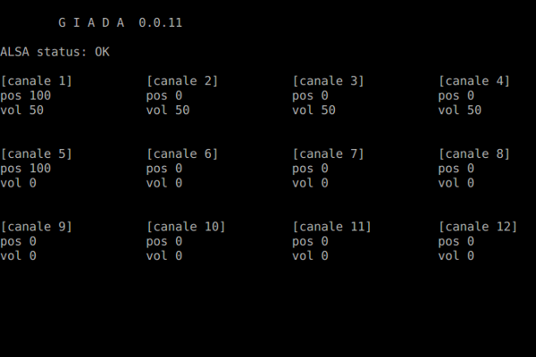
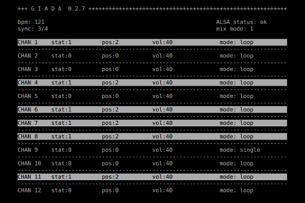
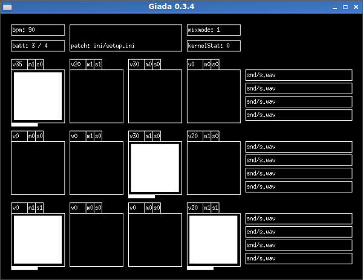
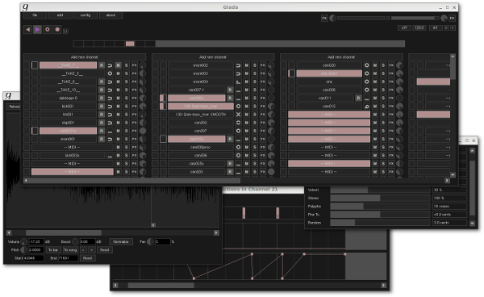
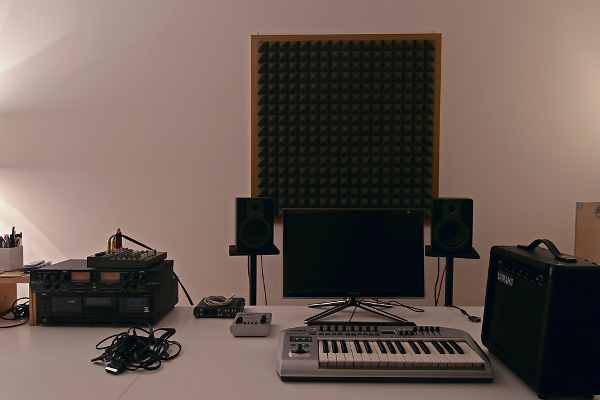

LMP Asks #7: An interview with Giovanni A. Zuliani
This month we talked to Giovanni A. Zuliani, the founder and project manager of Giada LoopMachine, a minimal, hardcore audio tool for DJs, live performers and electronic musicians.
Hi Giovanni, thank you for taking the time to do this interview. Where do you live, and what do you do for a living?
I, along with my team live in Milan (northern Italy), working as a freelancer/IT consultant. Lately I’m doing a lot of web development, with pleasure I must say.
Can you tell us a bit about the history of Giada Loopmachine
I would date Giada back to late 2009 - early 2010, when I decided to move my whole setup toward the Linux world. I needed a piece of software to fire samples with my PC keyboard, so I sketched down a draft prototype in a couple of days. It all started with a ridiculous console-only mockup, with the GUI drawn with a series of printf and escape sequences. Actually I was brave enough to do a couple of live shows with that stuff.
Then it started to grow slowly, passing from a ncurses interface with samples loaded via .ini files to a complete refactoring with FLTK and other libraries (RtAudio in the beginning) which led to the first official release for the masses (0.0.1), on September 09, 2010. It’s still in the changelog!




Nowadays I would define myself as the “project manager” of Giada, while several people and technologies are helping its maturation. Even if Giada is still in an early stage of life, the whole experience is teaching us a lot about software development in general.
The core team is made up by me and two other guys, Valerio Costantini and Stefano Milani. I write the ~80% of the code, they do the rest and give a hand with the web/social development. We all commit on Github under the same account (monocasual).
I would also include the precious help of "external" people like Blablack (https://github.com/blablack) with his MIDI lightning support or John Derry (https://github.com/johndderry) with his MIDI tunneling, to name a few. Those features are still experimental but will be merged soon in the master branch.

Giada LoopMachine as it is today!
Can you tell us a bit about any other projects you are involved in?
I gather all of my works under a collector named Monocasual Laboratories. On that page you may find another fairly tasty project called La Dolce Vita Cooking Book: an emerging web magazine about the Italian way of living, of which I am the co-founder.
What is your musical background?
I’ve been always interested in what I call “processed music”. I mean, any kind of sound that goes through a manipulation, elaboration, distortion or filtering. That description fits naturally with the concept of electronic music, a genre I am really involved into, but it can be broaden to other styles as well.
My main music project, TBLR Orchestra (youtube, soundcloud), is a sort of experimental ground where I test things, ideas and soundscapes. Persistence of Vision does the same with video processing. At the moment they are both on hold: one can think of them as “pointers”, or future references for something more serious as soon as Giada becomes ready for my own production standards.
Currently I don’t play any instruments in the traditional way and I lack of any execution skills, even if I have some basics for piano playing (and piano lessons in my personal roadmap).
What is your typical workflow when making music?
Everything starts from a psychological factor: I must be committed to a project. I dislike the idea of doing some random tracks, put them on the Internet, see what happens and whatever. Once the scope and the directions are set, I start with defining the method.
Being systematic about that is very enjoyable in my opinion, because each time I have to plan the actual workflow: the software involved, the sources I will sample from, the physical tools used. It also gives me the great opportunity to self-impose some boundaries to the creative process: I believe that the best outcome flourishes in limited conditions. At least that’s how I enjoy creating stuff.
As I said before my purpose is to include Giada as the main sequencer, MIDI controller and sampler, eventually supported by a DAW for recording and mastering. I really like Reaper speaking of that. Hardware like cheap preamps, tape recorders, low-quality microphones and low-priced guitar amps are used as sound processors. Lo-fi approach is my cup of tea, I tend to use any piece of junk that can output sounds.
Tell us a bit about your hardware set up
The “core” is my laptop. I bring it anywhere needed. It features Ubuntu 14.04 with LXDE. I use it both for music production and software/web development. At home I dock it on my desk, linked to a couple of M-Audio amplified studio monitors through a (cheap, of course) Phonic mixer.
Three noteworthy items: MXL Cube Condenser microphone, Tube Ultragain MIC200 mic-preamp by Behringer (I know, Behringer means crap by I really dig that tool) and Pro VLA 2 analog compressor by ART. I recently bought the AKAI LPD8, a compact MIDI controller with pad and knobs. Very useful for drum programming and sampling.

What is your history with Linux?
As I said before it all started in late 2009. I needed a slick tool for development purposes and Windows was too bloated. I’m not an evangelist nor a fanboy, I just need the best tool for solving problems without time waste. I found in Linux a good partner. I especially love the power of the command line.
Why do you feel open source is important, and what for you is the most important aspect of Linux audio?
I like the open source way for its hacking-oriented approach. Everyone interested can submit his/her own code, ideas, suggestions, or browse the existing one to gain knowledge. You don’t have to wait for the big, corporate and obscure release to come out if you want to test: just clone the source code from the repo and start your experiments.
In my opinion it’s also a way to build a stronger community around a particular product. In addition, and I still don’t know why, open source projects seem less packed with crapware and useless functions. Maybe it’s just my stroke of luck, though :)
To be honest, I don’t perceive any philosophical urgencies in the Linux audio approach of making music with free tools. I mean: I don’t want to change anyone’s mind about that, people should be free to use the best tools they can get to solve their own problems. And yet I totally respect those who try to spread the open source word at their best. I just find it useful for making stuff together, having fun with new people and ideas and keep the technological progress running.
What do you feel is currently lacking in Linux audio?
Speaking of functionality, there are tons of great projects out there in the Linux audio land. I would say nothing is currently lacking, then. I also appreciate the recent improvements in usability and care for what concern the “corporate image” of many of them, shaking off the past feeling of something too complex, difficult, or maybe not so cool for a newcomer.
Moreover you guys are filling another small gap from the past: a place where to find great documentation, tutorial, tools and goodies with a fresh interface and a modern look. Linux audio is on the right track from my personal point of view.
What is your favourite FLOSS plugin?
I find MDA plugins to be very cool, too bad they don’t have a GUI. I’m also keeping an eye on the CALF suite, it looks absolutely promising. It surely will be my first choice as soon as we will implement LV2 hosting in Giada (and it will happen soon).
Are there any FLOSS projects that you are excited about at the moment?
Apart from the Linux audio environment I deeply enjoy following WINE’s evolution. Ardour is another great piece of software: it could substitute Reaper in my setup shortly. Plus I’m intrigued by its paid vs free philosophy. Finally I’m discovering the tremendous power of FFmpeg even if I’ve just scratched its surface.
What changes, if any, would you like to see within the Linux Audio community?
Being a newbie in the Linux Audio community, I had no chances to fully check its status. So far I’ve found very capable guys willing to help with great ideas. No changes required, then :)
What advice would you give to a new Linux Audio user?
A straightforward two-folded one: browse libremusicproduction.com on a daily basis and grab the latest package of Giada LoopMachine as soon as possible. What else?